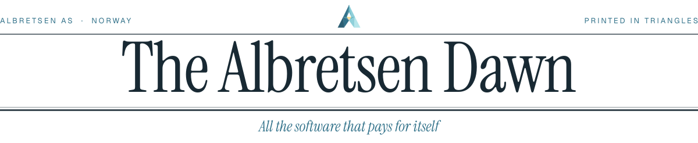
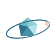
Software that pays for itself, printed at dawn.
A newspaper that arrives before the news does. Pastel air, low-poly light, one quiet masthead. Every image in this kit is printed in triangles.
The brand is a morning paper set in 2036 by a press that only knows facets. Headlines are facts, never adjectives. Photographs arrive as lagoon prints; illustrations as low-poly objects lit by a low warm sun from the right.
The mark is a faceted A whose crossbar holds a single warm triangle: the sun coming up inside the letter. It is the only ornament the site needs.
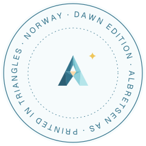
Hero imagery
Three heroes, all 16:9 at 1600 and 3200 px, plus 780×1100 portraits for phones. WebP, AVIF for the 1x.
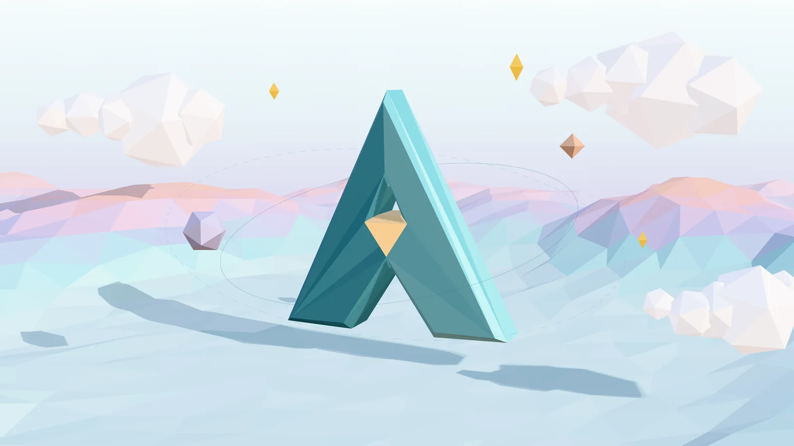
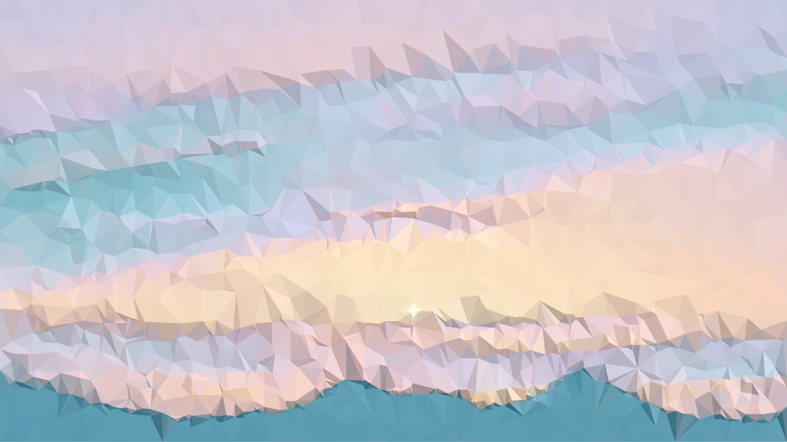
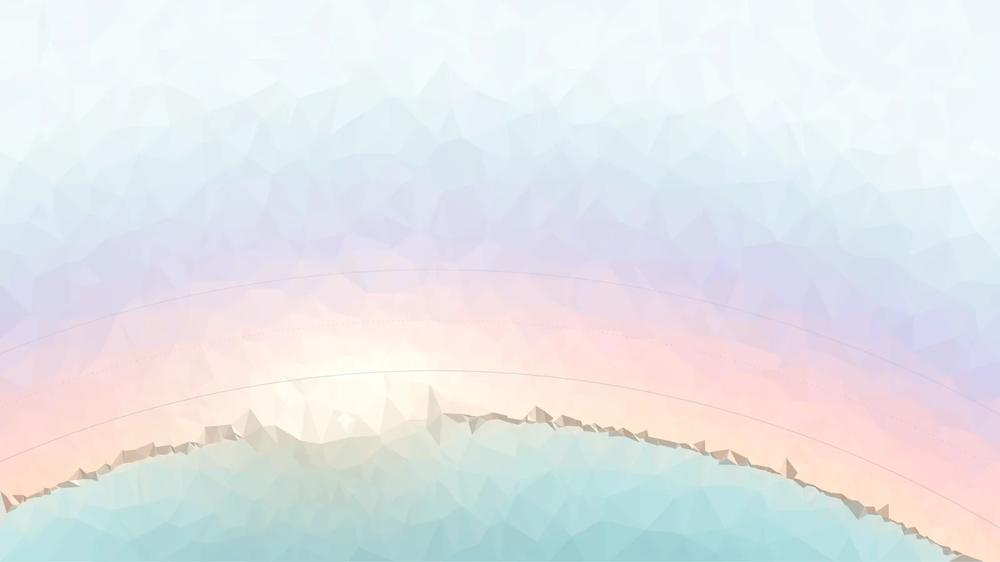
Identity
The facet A: eleven triangles lit from the upper right, a warm sunrise triangle in the crossbar, a four-point spark. Wordmark in Instrument Serif, outlined to paths.

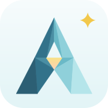
Palette
Seed hue 204°. Air first, ink last. Lagoon carries links and figures; gold appears only as the spark.
Type
Instrument Serif for headlines (the newspaper), Geist for reading (the technology), Geist Mono for keys, commands and figures. All OFL, all on Google Fonts.
Dawn, orbit, spark.
Kicker · Geist 500 · 11/0.2em caps
Headline · Instrument Serif 40
Deck · Instrument Serif Italic 28
Body · Geist 400 / 17. Email for AI agents, a word game with 113,000+ installs, and one MCP URL that gives an agent every tool.
claude mcp add albretsen https://albretsen.no/mcp
Products
Each live product is a 4:3 front-page photograph: its real logo on a low-poly slab, untouched (the logo face is unlit, so its colours are exact). Hover a card for the facet sheen.
Retired products · specimens on transparent ground
Around the page
Lagoon photo prints of NASA's ISS sunrises, paper grain from ambientCG, a quiet facet pattern, the edition stamp, ears, rules, keycaps and floating stickers.
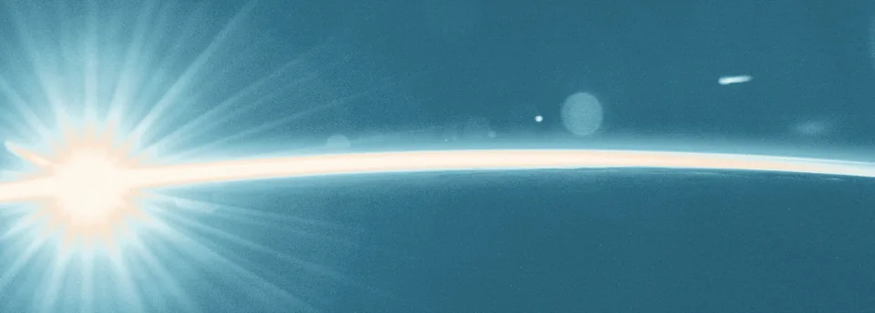
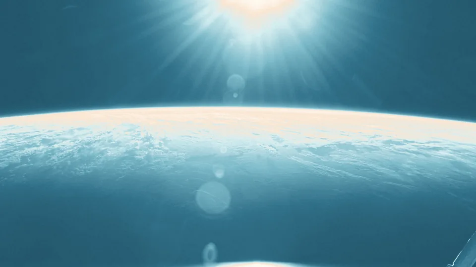
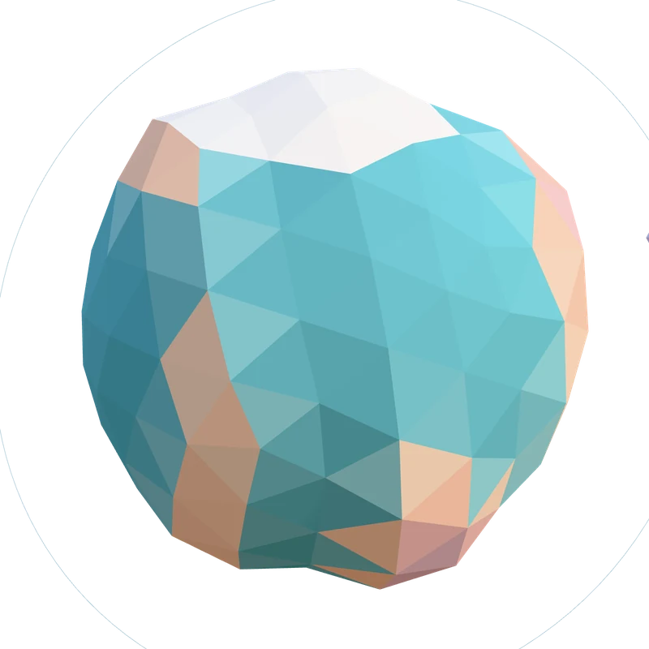
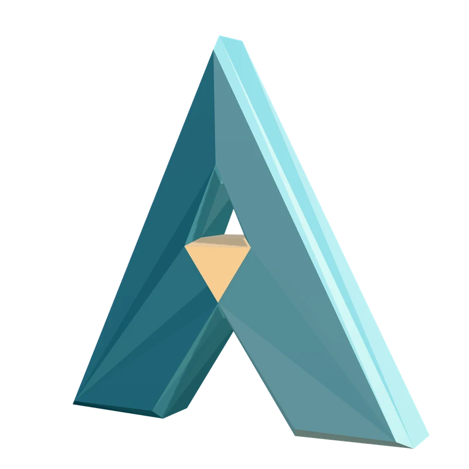
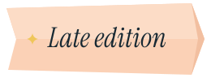
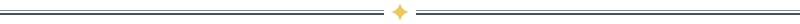
Objects you can hold
Drag to spin. orbit.js mounts a live low-poly planet or crystal with satellites; crystal.glb and planet.glb are the same objects as files for any GLTF viewer.
Motion
Six named motions in motion.css / motion.js. Short travel, soft expo-out, never a bounce.
press-run
Entrance. Words rise out of a soft blur, staggered like a press run. After Magic UI's Blur Fade.
facet-sheen
Hover. A triangular band of dawn light crosses the card while it tilts toward you.
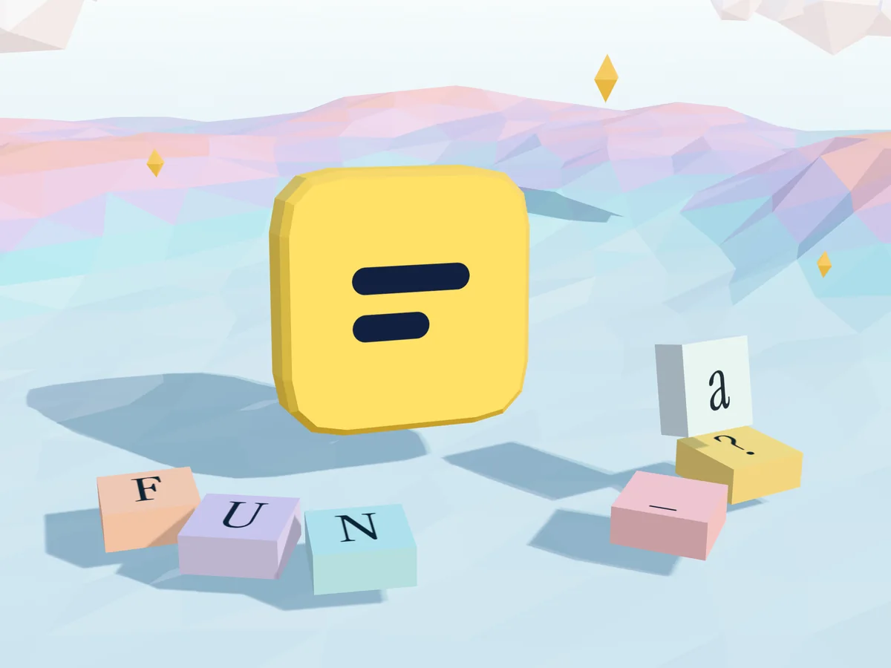
edition-turn
Transition. View Transitions API: the new edition sweeps in on a diagonal facet. Press J / K.
dawn-break
Reveal. A section is uncovered by a sun rising from its lower edge, driven by scroll.
sheet-unfold
Transition. The ? keycap morphs into the shortcut sheet (shared view-transition-name).
stamp-orbit
Ambient. The edition stamp turns once a minute and stops when you look at it.